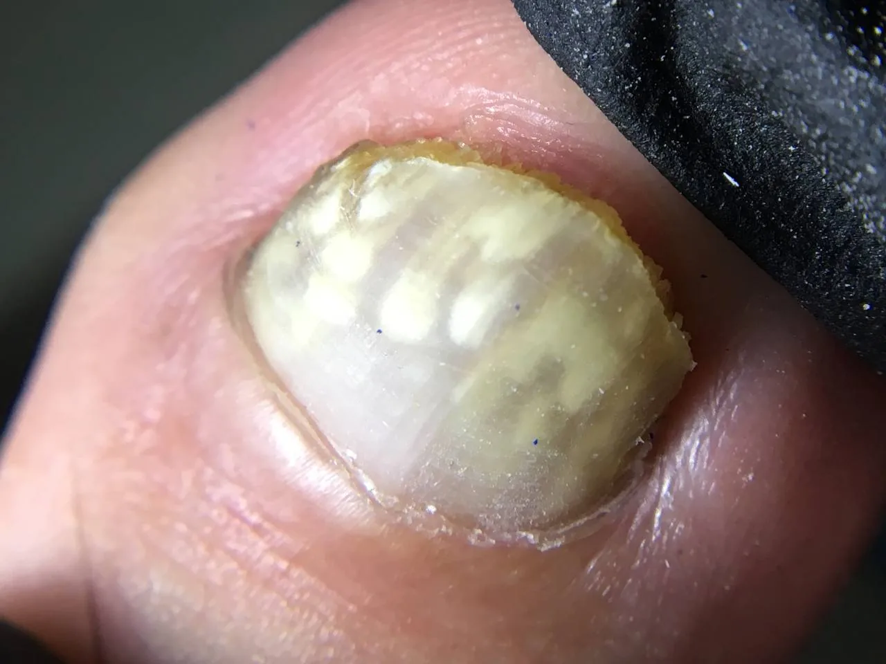
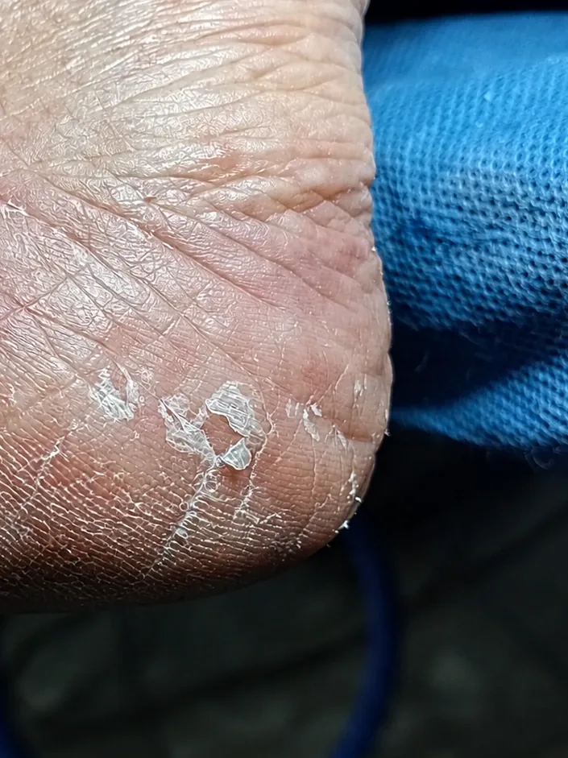

La uña es una barrera, no una piel
La onicomicosis es la infección de la uña por hongos. Rara vez está en la superficie: se instala en el lecho ungueal (la piel bajo la uña) y en la matriz (donde la uña nace), protegida por una lámina de queratina densa y poco permeable.
Una crema está pensada para absorberse en la piel. Aplicada sobre la uña, gran parte del medicamento se queda en la superficie y llega en muy poca cantidad al lugar donde está el hongo. Por eso los tratamientos tópicos para uñas tienen, en general, resultados más modestos que los orales.

¿Dónde está el hongo realmente?
Lámina ungueal
La parte dura y visible. Cuando se engrosa, cambia de color o se desmorona, el producto penetra aún peor.
Lecho ungueal
La piel que queda debajo de la uña. Suele ser el punto de partida de la infección y no es accesible desde la superficie.
Matriz
Es la zona donde se forma la uña nueva. Si el hongo llega hasta aquí, la infección es más difícil de erradicar.
Por qué la mejoría no se ve enseguida
Aunque un tratamiento controle el hongo, la parte dañada de la uña no vuelve a la normalidad: hay que esperar a que crezca una uña nueva y sana. Esto es lo que suele ocurrir:
- Primeras semanas La uña se ve igual. Puede haber menos picazón o mal olor en la piel de alrededor.
- Meses 3 a 6 Si el tratamiento funciona, aparece una franja de uña clara en la base.
- Meses 6 a 12 La uña sana avanza hacia la punta, pero la zona afectada sigue visible.
- Meses 12 a 18 En los pies, este suele ser el tiempo necesario para que la uña se renueve por completo.
Muchos tratamientos tópicos para uñas se aplican a diario, o en cabina cada 15 días o una vez al mes, durante 6 a 12 meses. Abandonarlos antes de tiempo es una de las razones por las que la infección vuelve.
Crema, laca medicada y tratamiento oral
| Opción | Cómo actúa | Cuándo se considera | Limitación |
|---|---|---|---|
| Crema antifúngica común | Actúa sobre la piel donde se absorbe bien. | Pie de atleta, hongos entre los dedos y en la planta. | Poca penetración en la lámina ungueal. |
| Pinceladas o lacas para uñas | Fórmulas diseñadas para atravesar la uña. | Infecciones leves o moderadas, con indicación profesional. | Uso diario durante meses y resultados variables. |
| Antifúngico oral | Llega a la uña desde la sangre. | Infecciones extensas, varias uñas o poca respuesta a lo tópico. | No elimina por sí solo el material infectado bajo la uña y requiere valoración médica por posibles efectos sobre el hígado e interacciones. |
Si quieres conocer los riesgos de la opción oral, lee nuestro artículo sobre antifúngicos orales y sus efectos sobre la salud.

Donde las cremas sí son útiles
Que no sean la mejor herramienta para la uña no significa que sobren. Las cremas siguen siendo importantes para:
- Tratar el pie de atleta entre los dedos y en la planta.
- Controlar la piel que rodea la uña, que suele ser el origen y el reservorio del hongo.
- Reducir el riesgo de que la infección pase de una uña a otra.
- Complementar el tratamiento indicado para la uña.
Tratar la piel y la uña al mismo tiempo evita que el hongo vuelva a instalarse desde el pie.
Opciones tópicas pensadas para la uña
Existen pinceladas y lacas con ingredientes antifúngicos, como fármacos y ácidos. Se aplican directamente sobre la uña, según el caso, durante algunos meses, en dependencia de la gravedad. Su disponibilidad y su indicación dependen de cada caso y de cada país, por lo que conviene que las recomiende un profesional.
¿Para quién suelen ser adecuadas?
Para infecciones leves o moderadas, cuando la uña no está muy engrosada ni afectada en su mayor parte.
¿Cuándo suelen quedarse cortas?
Cuando hay mucha afectación, la uña está muy gruesa, hay varias uñas comprometidas, el hongo llega a la matriz o un desbaste incorrecto deja zonas infectadas con carga fúngica activa.
Cómo aumentar las posibilidades de éxito
- Confirma el diagnóstico. Traumatismos, psoriasis y otras condiciones pueden parecer hongos; un examen integral evita tratar lo que no es.
- Reduce la carga fúngica. El podólogo desbasta la uña de forma segura para que el producto penetre mejor y se eliminen las zonas infectadas casi imperceptibles. No lo hagas en casa con instrumentos improvisados.
- Sé constante. Aplica el tratamiento tal como se indicó y durante todo el tiempo recomendado; aunque la uña parezca mejor, no lo interrumpas.
- Trata también la piel. Si hay pie de atleta, trátalo a la vez para cortar el contagio hacia la uña.
- Cuida el entorno. Seca bien entre los dedos, cambia de calcetines a diario, desinfecta y deja airear el calzado y no compartas cortaúñas, limas ni toallas.
¿Y los remedios caseros?
El vinagre, el bicarbonato, el agua oxigenada, el ajo o el limón son populares, pero no hay evidencia sólida de que curen una onicomicosis establecida. Algunos pueden mantener limpia la zona, pero mientras tanto la infección puede avanzar. Si quieres probar algo, consúltalo antes con un profesional.
Cuándo no conviene esperar
Consulta con un profesional si la uña cambia de color, se ahueca, presenta líneas o si la infección establecida avanza.
- Tienes diabetes o mala circulación en las piernas.
- Hay varias uñas afectadas o la infección se extiende a la piel.
- La uña se desprende, se engrosa mucho o se curva hacia la piel.
- Has usado cremas durante semanas o meses sin ningún cambio.
Preguntas frecuentes
¿Puedo usar la crema del pie de atleta en la uña?
Ayuda a tratar la piel de alrededor, pero por sí sola rara vez elimina un hongo establecido dentro o debajo de la uña, porque no atraviesa bien la lámina ungueal.
¿Cuánto tarda en desaparecer un hongo de la uña del pie?
Aunque el tratamiento funcione, la uña dañada debe crecer completa y sana, lo que en los pies suele tardar entre 12 y 18 meses.
¿El hongo puede volver?
Sí. Si no se trata también la piel del pie, no se corrigen los factores de contagio o se suspende el tratamiento antes de tiempo, la infección puede reaparecer.
¿El vinagre o el bicarbonato curan los hongos de las uñas?
No hay evidencia sólida de que lo hagan, y algunos pueden irritar la piel. Es mejor confirmar el diagnóstico y recibir una indicación profesional.
Lo más importante
Las cremas antifúngicas son valiosas para los hongos de la piel, pero rara vez bastan para una infección establecida dentro o debajo de la uña, porque la lámina ungueal limita su penetración.
La mejor estrategia depende del tipo de hongo, de cuántas uñas están afectadas y de su salud general. Confirmar el diagnóstico, tratar piel y uña a la vez y ser constante marcan la diferencia.
Fuentes consultadas
- PubMed – Tratamiento tópico de la onicomicosis de las uñas del pie: revisión basada en la evidencia
- PMC6937150 – Onicomicosis: tratamientos tópicos nuevos y emergentes
- PMC6600855 – Avances recientes en las terapias para la onicomicosis
- PMC5753103 – Efinaconazol 10 %: factores que contribuyen al éxito
- PubMed – Administración transungueal de fármacos y barrera de la lámina ungueal
Conoce todo lo que tratamos en nuestra página de podología o lee más en el Blog de BeautyPod. Para entender qué es y cómo se contagia la infección, lee Onicomicosis y hongos en la piel.